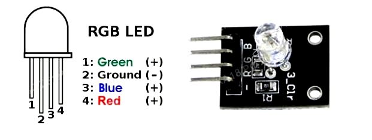

Rgb լեդի միացում ARDUINO-ին
Կիրառելով RGB լեդ հնարավորություն ենք ստանում լուսավորել ցանկացած գույնով։
Բոլոր գույները ստանալու ստանալու համար անհրաժեշտ է 3 գույն՝ RGB(red-կարմիր, green-կանաչ, blue-կապույտ)։RGB-ին կիրառվում է ոչ միայն գրաֆիկական խմբագրիչներում, այլ նաև կայքերի պատրաստման ժամանակ։ Խառնելով գույները տարբեր մասնաբաժիններով, հնարավոր է ստանալ ցանկացած գույն։
RGB լեդը ունի ելքեր՝ մեկը ընդհանուր(անոդ կամ կատոդ՝ ամենաերկար ելք) և 3 գույնային ելքեր։Յուրաքանչյուր գունային ելքին պետք է միացնել ռեզիստոր։

Անհրաժեշտ էլեմենտներ
- Arduino Uno/ Arduino Nano/ Arduino Mega
- breadboard
- RGB լեդ
- 3 ռեզիստոր 220օմ
- լարեր «պապա֊մամա»

#define RED 11
#define GRN 10
#define BLU 9
void setup() {
pinMode(RED, OUTPUT);
pinMode(GRN, OUTPUT);
pinMode(GRN, OUTPUT );
pinMode(BLU, OUTPUT);
}
void loop () {
// սահուն միանում/ անջատվում է կարմիր գույնը
for (int i = 0; i <= 255; i++) {
analogWrite(RED, i);
delay(2);
}
for (int i = 255; i >= 0; i--) {
analogWrite (RED, i);
delay(2);
}
// սահուն միանում/ անջատվում է կանաչ գույնը
for (int i = 0; i <= 255; i++) {
analogWrite(GRN, i);
delay(2);
}
for (int i = 255; i >= 0; i--) {
analogWrite(GRN, i);
delay(2);
}
// սահուն միանում/ անջատվում է կապույտ գույնը
for (int i = 0; i <= 255; i++) {
analogWrite(BLU, i);
delay(2);
}
for (int i = 255; i >= 0; i--) {
analogWrite(BLU, i);
delay(2);
}
}
|
Կամ |
#define RED 11
#define GRN 12
#define BLU 13
void setup() {
pinMode(RED, OUTPUT );
pinMode (GRN, OUTPUT );
pinMode (BLU, OUTPUT );
}
void loop() {
digitalWrite(RED, HIGH );
digitalWrite(GRN, LOW);
digitalWrite(BLU, LOW);
delay(1000); // սպասել
digitalWrite(RED, LOW );
digitalWrite(GRN, HIGH );
digitalWrite(BLU, LOW );
delay(1000); // սպասել
digitalWrite(RED, LOW);
digitalWrite(GRN, LOW );
digitalWrite(BLU, HIGH );
delay(1000); // սպասել
}
|
- RGB լեդը ղեկավարելու համար կիրառվում է անալոգային ելքերը, դրա համար անհրաժեշտ է լեդը միացնել անալօոգային ելքերին. օր՝. 11, 10, և 9 ելքերին, և այդ ելքերին հաղորդել տարբեձր արժեքներ, կիրառելով for ցիկլը
- Այսպիսով, RGB-ի բոլոր 3 գունային մուտքերին կարող ենք հաղորդել տարբեր շիմ-ազդանշաններ 0-255 միջակայքից, որը թույլ է տալիս ստանալ գրեթե բոլոր գույները: